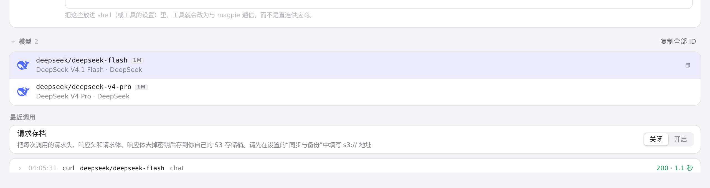
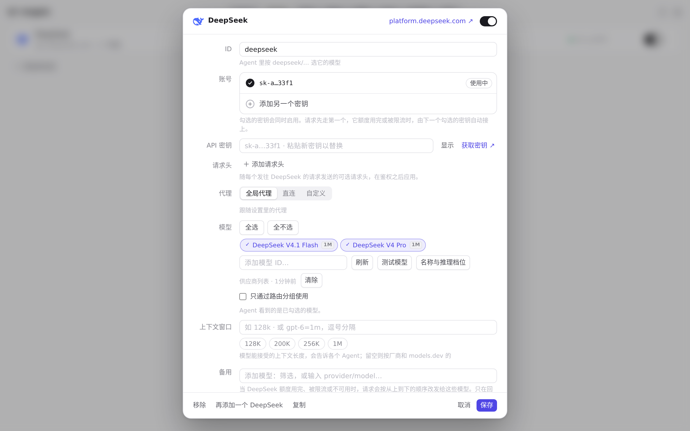

#492 界面预览
commit 95dfdcb · 回到 PR · 把网关「最近调用」的耗时与 TTFT、供应商端点测试结果、模型 chip 的提示文案和单个模型测试的状态文案，从写死的 `${ms} ms` 改成复用 ledTook() 的毫秒/秒自适应单位；中英 i18n 对应键的 {ms} 占位符改为 {took}，中文变成「{took}内响应」。
红线是鼠标走过的轨迹，红色圆环是一次点击；底部文字是这一步在做什么。空格暂停，← → 逐段查看。

网关最近调用的耗时单位 · 网关「最近调用」列表：三次真实请求的状态与耗时

供应商模型测试的耗时显示 · DeepSeek 展开后的端点与模型列表
供应商模型测试的耗时显示 · 测试后模型列表上的结果标记